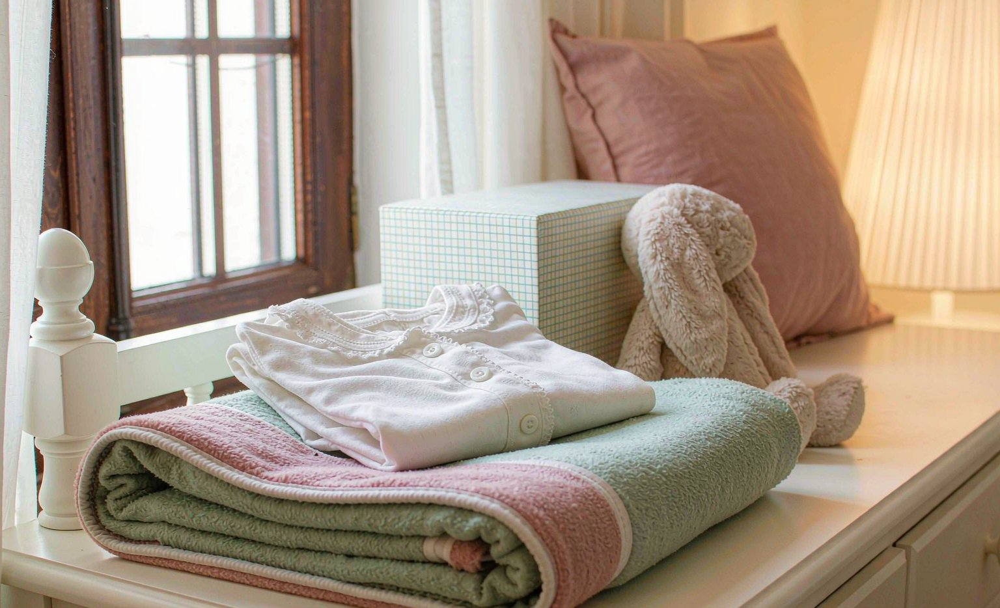

Custom Gifts for a New Baby: What New Parents Actually Use, With Prices
Short answer: the custom baby gifts new parents actually use daily are a $49.99 personalized blanket, a $19.99 name onesie set, and a $24.99 nursery-name print, while decorative keepsakes often sit in closets.
Bottom line: choose washable, skin-safe fabrics for anything touching the baby, put the birth date on keepsakes, and order two to three weeks ahead because name spelling errors cannot be fixed after printing.

New-baby gift registers fill with plush toys and keepsake boxes that get used once. We asked parents who ordered from us what they actually reached for at 3 a.m., and the answers reshaped this list: usefulness wins, keepsakes need dates, and fabric safety is not negotiable. All prices are September 2026 catalog prices.
The Daily-Use Winners
The Personalized Baby Blanket at $49.99 was the single most-mentioned item: swaddle, stroller cover, tummy-time mat, and background of a thousand photos. The Name Onesie Set at $19.99 ran second, because babies outgrow sizes and parents appreciated a two-size set. The Nursery Name Print at $24.99 decorated the room and doubled as a photo backdrop.
Keepsakes: Only With the Date
Birth-stat keepsakes, plaques, and frames rank lower on daily use but higher on long-term value, and the pattern is clear: the ones parents treasure print the full birth date, weight, and time. Without the date, a keepsake is decor; with it, a record. Double-check spelling against the birth certificate before approving the proof.
Fabric Safety Notes
Anything touching newborn skin should be a washable, soft-weave fabric, and prints should be on the side away from the baby, which is standard on our blankets and onesies. Wash everything before first use with fragrance-free detergent, which also sets the print. Avoid hard embellishments near the face or hands entirely.
Seven Picks Ranked by Reported Use
| Gift | Price | Parent feedback |
|---|---|---|
| Personalized Baby Blanket | $49.99 | Used daily, most-mentioned |
| Name Onesie Set (2 sizes) | $19.99 | Second-most used |
| Nursery Name Print | $24.99 | Decor plus photo backdrop |
| Birth-Stat Keepsake | $29.99 | Treasured when dated |
| Custom Bib Set | $16.99 | Practical, gag-gift appeal |
| Photo Milestone Cards | $14.99 | Monthly photo tradition |
| Plush Name Toy | $21.99 | Cute, less used |
Sizes, Growth, and the Two-Size Rule
Newborn sizes are a trap. A baby leaves the smallest size within weeks, and a personalized garment that fits for three weeks reads as a wasted purchase even when the print is perfect. Parents told us the same thing repeatedly: they would rather have a set that still fits at four months than a newborn piece they photographed once.
The practical answer is the two-size set. Ordering the same name design in a small size and the next size up covers the first half year without duplicating a design the parents already own. Where only single sizes are available, buy the size the baby will be wearing at the shower plus one step up, and skip the newborn size unless the gift is arriving before the birth.
For everything that is not clothing, size means coverage. A custom blanket gets used for years because it does not depend on weight or height, and a nursery print stays on the wall long after the onesies are packed away. If your budget covers one gift only and you want it to last past the first birthday, the blanket and the wall print both outlast any garment.
One caveat on big items: a large blanket is harder to use in a stroller or a car seat. Many parents end up with one heavy blanket for the crib and one light piece for the stroller, so if you know the family's routine, match the weight to the use rather than buying the largest option available.
What to Print on a Baby Gift
The safest personalization on a baby gift is the information, not the wording. A full name, the birth date, the weight, and the time are facts that cannot go out of style, and they turn an ordinary item into a record. The same facts also give the parents something to check against the birth certificate, which is where spelling errors get caught.
Nicknames are riskier than they look. A name used mostly during pregnancy may not survive the first month, and a name the parents later shorten or change leaves a permanent oddity on the print. If you want to use a nickname, confirm with the parents that they are keeping it, or place it in a second, smaller line beside the full name.
Avoid predictions about the future. Lines about what the baby will become, what sport they will play, or what profession they will choose read as jokes that the child has to grow into, and the item is often still in the house years later. Simple statements age better than forecasts, and a date with a name says more with fewer words.
If you want to say something warm, describe the present instead of the future: loved since a specific date, or a family name carried forward. Those lines stay true permanently, and they also give the parents a sentence they can read out loud when relatives ask about the gift.
Six Gifts to Skip for a Newborn
Knowing what to leave out is as useful as knowing what to buy. The six categories below are the ones parents most often described as well meant but unused, and each has a better substitute in the same price range.
The common thread is use over display. A gift that requires the parents to store it, dust it, or protect it from a toddler adds a chore to a household that is already short of time. A gift that goes into the wash and comes out intact does the opposite.
If you have already bought one of the items below, use it as a supplement rather than the main gift. A plush toy beside a name blanket is fine, and a plush toy instead of one is the mistake that shows up in every parent conversation we have.
- Anything with hard plastic or metal parts near the face or hands
- Plush toys without a washable cover, which collect dust quickly
- Keepsake boxes that cannot hold anything useful
- Newborn-only clothing, which is outgrown within weeks
- Painted or dyed finishes that cannot go through a washing machine
- Personalized items ordered without checking the name against the birth certificate
Safety, Washing, and the First Six Months
Anything that touches a newborn needs to survive frequent washing, and the print has to survive with it. Soft-weave fabrics with the print on the side away from the skin are the standard on our blankets and onesies for that reason. Wash new items once with fragrance-free detergent before first use; it removes production residue and also sets the print.
Hard parts are the real hazard. Buttons, snaps, plastic eyes, and glued-on shapes near the face or hands are the elements to avoid entirely on a gift for a newborn, and they are also the first things to break in a washing machine. Embroidery and flat prints do not create that problem, which is why they dominate this category.
Keep the weight of the item in mind too. A blanket used as a stroller cover should be light enough not to overheat the baby, and a crib piece should be flat rather than bulky. When in doubt, choose the thinner fabric and let the parents add layers they control. Our photo tips for printing also help if you are supplying the image yourself.
Frequently Asked Questions
What custom baby gift gets used the most?
The personalized blanket, by a wide margin: parents report using it as a swaddle, stroller cover, tummy-time mat, and photo background daily, which is why it leads this list at $49.99.
Are custom printed baby items safe for newborn skin?
Choose soft-weave, washable fabrics with prints on the side away from the baby, which is standard on our blankets and onesies. Wash before first use with fragrance-free detergent and avoid hard embellishments near the face.
How far ahead should I order a custom baby gift?
Two to three weeks before the due date or baby shower. Name spelling errors cannot be fixed after printing, so leave time to check the proof against the birth certificate.